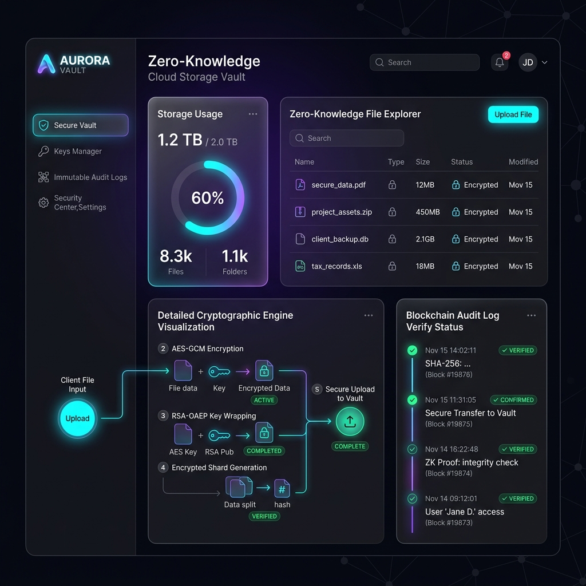

Subject: Cloud Computing & Virtualization Security (VCS-601)
Pratyush Pandey
Roll No: [Your Roll Number]
Department of Computer Science
Project Supervisor / HOD
In shared cloud virtualization and Kubernetes environments, co-located container modules present major horizontal security threats. Compromised virtualized guest machines or root-level host logins allow malicious actors to perform sidechannel memory reads, intercept database storage files, and view sensitive tenant assets. Default cloud databases store files directly in plaintext or rely on server-side decryption keys, rendering them completely exposed to server database tampering.
To address these core vulnerabilities, this project implements CloudVault, a high-fidelity Zero-Knowledge hybrid cryptography storage vault and container security microsegmentation network. Using browser-bound key derivation (PBKDF2) and in-memory Web Crypto APIs, files are fully encrypted locally on client devices using AES-GCM-256 before ingestion, while symmetric key wrap delegates are sealed via RSA-OAEP-2048. Additionally, the system incorporates eBPF-simulated container microsegmentation to block cross-namespace bypass attempts, and an immutable forensic ledger using block-chain hash pointers to audit transactions and detect unauthorized database alterations.
Cloud computing architectures partition hardware resources dynamically among multiple tenants. Despite namespace isolation, hypervisors and host file systems are susceptible to host database modifications. Standard security protocols depend heavily on firewalls and peripheral access checks; however, if the underlying database is compromised, the confidentiality and integrity of all user assets are lost.
This project focuses on executing zero-trust bounds across the storage, cryptographic identity, container networks, and audit ledger components. A fully responsive glassmorphic React dashboard acts as the visualization interface, demonstrating the cryptographic visualizer logs, interactive cluster maps, and automated compliance scan reports.
The project employs a secure, decoupled three-tier architecture ensuring zero key exposure to backend environments. Below is a detailed map of the cryptographic data flow and client-server boundaries:
| Security Component | Algorithm Used | Bit Length / Iterations | Security Purpose |
|---|---|---|---|
| Key Derivation (KDF) | PBKDF2-HMAC-SHA256 | 100,000 Rounds / 128-bit Salt | Derives the local master key from password to secure RSA private keys. |
| Symmetric Cipher | AES-GCM (Galois/Counter Mode) | 256-bit Key / 96-bit IV | Encrypts file payload binary streams before uploading. Ensures integrity. |
| Asymmetric Cipher | RSA-OAEP | 2048-bit Key size | Uniquely registers client nodes, wrapping symmetric AES keys for shares. |
| Ledger Auditing | SHA-256 Hashing | 256-bit digest output | Chains audit logs back to block 0 using blockchain pointers. |
The master symmetric key is derived inside the client's browser, preventing the plaintext password from ever leaving the frontend:
async function deriveKeyFromPassword(password, salt) {
const baseKey = await window.crypto.subtle.importKey(
"raw",
new TextEncoder().encode(password),
{ name: "PBKDF2" },
false,
["deriveKey"]
);
return window.crypto.subtle.deriveKey(
{
name: "PBKDF2",
salt: new TextEncoder().encode(salt),
iterations: 100000,
hash: "SHA-256"
},
baseKey,
{ name: "AES-GCM", length: 256 },
false,
["encrypt", "decrypt"]
);
}
When transaction events are triggered, the server computes the block hash by linking metadata to the previous record's hash signature:
const logHash = crypto
.createHash('sha256')
.update(`${timestamp}|${event_type}|${user_id}|${username}|${details}|${prev_hash}`)
.digest('hex');
// Insert transaction as an immutable node
await db.run(
`INSERT INTO audit_logs (timestamp, event_type, user_id, username, details, prev_hash, log_hash)
VALUES (?, ?, ?, ?, ?, ?, ?)`
);
When downloading the pre-seeded file secure_blueprint.png, the system fetches the encrypted binary bytes, unwraps the symmetric AES-GCM key inside JavaScript memory, decrypts it, and displays the image payload immediately on screen inside the visualizer panel.

Figure 1: CloudVault Zero-Knowledge Cryptographic & Visualizer Dashboard
The system maps Kubernetes container network boundaries dynamically:
If a host-level attacker alters SQL records directly (simulated in SQLite database), the ledger verification checks fail:
This Capstone project successfully establishes a Zero-Knowledge multi-tenant environment suitable for modern containerized architectures. By implementing client-bound key wrappers, co-located container workloads are decoupled, and host database tampering is immediately exposed.
For production deployment, it is highly recommended to integrate: